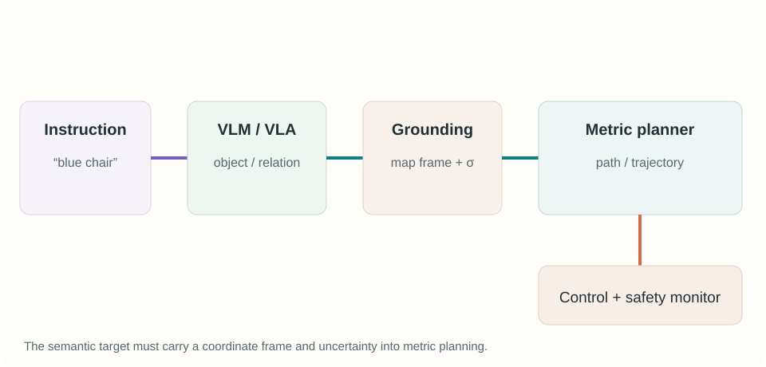
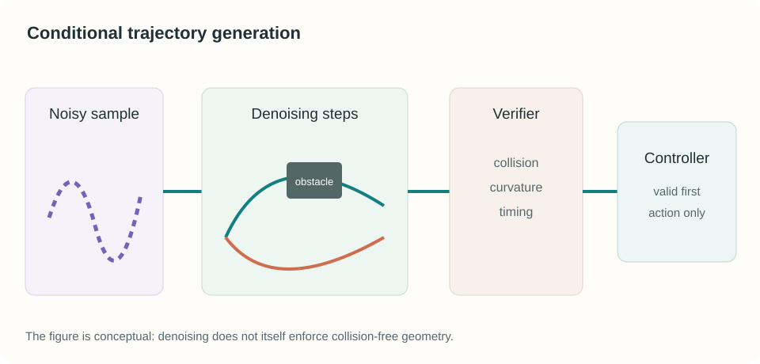
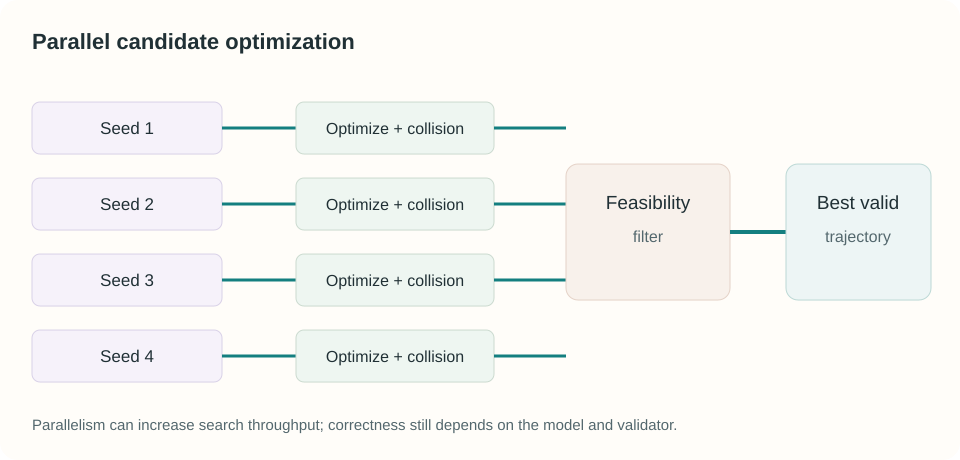
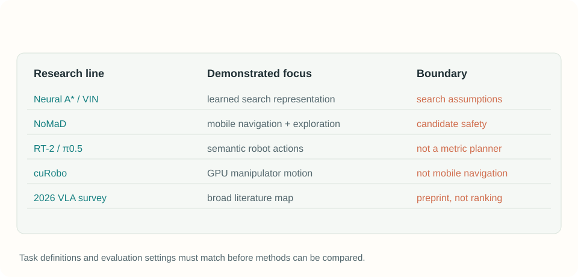

路径规划的前沿：基础模型会理解世界，但谁来保证机器人走得过去？
从 VLA 与视觉语言导航，到扩散轨迹、可微分搜索和 GPU 并行优化。把最新研究放回正确的系统层级，区分语义能力、候选生成、几何可行性和真实部署证据。
一个模型能理解“去蓝色椅子旁边”，就等于会规划路径吗？
不等于。机器人导航至少包含三个不同层次：理解任务要去哪里、把目标落到可度量的空间位置、再找到满足机器人几何与运动约束的轨迹。视觉语言模型可以帮助解释指令或识别场景语义，但“看懂椅子”并不会自动给出经过定位、地图、足迹和碰撞检查的可执行路径。
研究前沿正在把语义理解、环境建模、候选动作生成和经典运动规划接得更紧。理解这条系统链，比简单地问“LLM 会不会替代 A*”更有用。
RESEARCH FRONTIER / 27

VLM / VLA：从语义指令到机器人动作
视觉语言模型（VLM）把图像与语言放进统一表示；视觉语言动作模型（VLA）进一步把机器人动作作为输出。RT-2 将视觉语言预训练与机器人轨迹数据共同微调，并把动作编码为模型可输出的 token。π0.5 则通过多机器人、多任务和多模态数据训练，研究模型在新环境中的泛化。它们展示了语义知识如何进入物理动作决策，但相关论文的主要任务包含机器人操作，不能直接把它们称为通用的移动机器人几何路径规划器。
截至 2026-11-23，Google DeepMind 于 2026-11-10 发布 Gemini Robotics 2.5 的产品/研究公告，强调更广泛的机器人技能和灵巧操作。它说明 VLA 研究仍在快速发展；但厂商公告不是独立的路径规划基准，也不能据此推断模型已替代 Nav2 或经安全认证。
对移动导航，语义模型更合理的接口通常是：从“去蓝色椅子旁边”识别候选对象，结合相机标定和定位把对象落到地图坐标，输出带不确定度的子目标，再交给几何规划器验证路径。
视觉语言导航：语义地图与长期空间记忆
视觉语言导航（Vision-and-Language Navigation, VLN）研究智能体如何根据自然语言指令和视觉观察，在部分可观测环境中连续行动。它不仅要识别物体，还要理解相对关系、保存过去观察到的空间线索，并在走廊、房间和地标之间选择子目标。
2026 年的组件化综述把 VLN 拆成指令理解、环境表示、智能体动作生成及它们之间的耦合，并讨论开放词汇地图、长时记忆和 sim-to-real。一个关键工程问题是语义地图中的对象位置并非绝对准确：遮挡、移动物体和视角变化会让目标估计带有不确定度。应将这种不确定性传递到目标区域或风险约束，而不是把一个语言模型输出的坐标当作精确真值。
Diffusion Policy：从单一路径转向候选轨迹分布
当一个场景存在多个合理动作（从障碍左侧或右侧绕行、在窄门前等待、先探索再接近目标）时，单一回归输出容易把多种模式平均成一条实际上不合适的轨迹。扩散策略通过逐步去噪，从条件分布中生成候选动作序列或轨迹。
NoMaD 是与移动机器人导航直接相关的例子：它用 Transformer 表示多机器人数据，并以扩散解码器统一建模目标导向导航和无目标探索。论文报告了真实移动机器人平台上的实验。重要边界是：扩散模型给出的是候选动作/轨迹分布，不等于每条采样轨迹都满足碰撞、曲率、制动和动态障碍约束；部署系统仍需要几何验证、执行监测和失败回退。
RESEARCH FRONTIER / 27

可微分规划：学习表示，不必放弃搜索结构
VIN 与 Neural A* 表明，学习模块可以嵌入显式规划计算，而不必直接输出不可解释的最终路线。网络可以从图像或地图学习引导图、代价或价值表示，搜索模块再根据状态转移和目标条件计算路径。这样的架构把“从数据中学习偏好”和“在图上进行组合搜索”分开。
它也带来新的验证问题：学习到的代价是否与真实风险相关？训练时的路径标签是否偏好某一种风格？如果用学习分数改变 A* 的启发式，经典可纳性和最优性是否仍成立？这些问题都需要具体算法和具体假设，不能笼统地说“神经 A* 仍然最优”。
GPU 并行轨迹优化：把计算预算花在更多候选上
高维机械臂规划往往需要反复做逆运动学、碰撞距离查询和轨迹优化。GPU 并行可以同时评估多个初始化或候选轨迹，从而提高搜索吞吐量。NVIDIA 的 cuRobo 论文展示了面向机械臂的并行无碰撞运动生成、优化和碰撞检测组件。
RESEARCH FRONTIER / 27

并行计算改变的是计算组织方式，不会自动修正错误的环境模型或碰撞几何。还要测量数据传输、预处理、同步和最坏延迟，不能只报告 GPU 核心计算时间。
安全、泛化与评估：模型越强，验证越不能省略
学习型系统面临的核心问题仍然是分布外场景、置信度失准、传感器偏差、数据覆盖不足和执行时延。一个模型可能在熟悉的室内走廊表现良好，却在玻璃、反光地面、拥挤人群或未见过的机器人底盘上失败。安全层需要独立地检查地图、机器人足迹、速度、制动距离、轨迹时序和命令有效期。
评估时要分开统计语义目标定位误差、导航成功率、碰撞率、路径长度、任务时间、重规划次数、模型推理时延和人工介入。仿真、受控实机和开放环境结果必须分列。对于人机共处或工业设备，还要按适用法规和风险评估设计独立的硬件安全链；模型的“安全回答”不是认证。
截至 2026 年 11 月：研究进展应如何解读
| 方向 / 代表工作 | 已经展示的内容 | 不能据此推断 |
|---|---|---|
| Neural A* / VIN | 学习引导表示并嵌入可微分搜索 | 对所有地图、代价和运动学约束都保持传统 A* 保证 |
| NoMaD（ICRA 2024） | 目标导航与探索的扩散策略；真实移动机器人实验 | 任意采样轨迹天然无碰撞或可直接安全部署 |
| RT-2 / π0.5 | 视觉语言知识迁移到机器人动作；开放环境任务泛化 | 它们是通用的移动机器人路径规划器 |
| cuRobo（ICRA 2024） | GPU 并行机械臂运动生成与优化 | 机械臂论文的速度数字可直接套用到移动导航 |
| 2026 VLA 生命周期综述 | arXiv 预印本梳理截至 2026-10 的 88 项工作 | 预印本等同于同行评审的统一排行榜 |
| Gemini Robotics 2.5 公告 | 2026-11-10 厂商公布新一代 VLA 能力 | 厂商公告是独立导航评测或安全认证 |
2026 年 8 月发表的 VLN 综述覆盖到 2026 年 6 月，重点讨论指令、环境表示、动作生成与真实部署。2026 年 11 月 13 日的 VLA 生命周期综述是 arXiv 预印本，覆盖 2022 年底至 2026 年 10 月的工作。它们适合做研究地图，但不应被误读成统一的路径规划性能排名。
RESEARCH FRONTIER / 27

交互：选择前沿模块，查看它负责什么
点击系统中的一个层级，查看它产生的输出和下一层必须接手的检查。静态图已经展示完整链路，交互只是帮助聚焦。
语义理解：把自然语言和图像落到地图中的目标区域；输出应包含坐标系与不确定度。
选择器只解释接口，不会调用在线模型或执行机器人动作。
可执行示例：模型给候选评分，碰撞检查决定能否执行
Python 3.10+，只使用标准库。三条候选路径有一个“模型分数”，但这个分数只用于给通过验证的候选排序；验证器检查起终点、边界、障碍和四邻域连通性。穿过墙体的直线路径会被拒绝，剩余路径中再选择分数较低的一条。
WIDTH, HEIGHT = 7, 5
START, GOAL = (0,2), (6,2)
WALLS = {(3,1),(3,2),(3,3)}
# Candidate scores are illustrative proposal scores, not learned probabilities.
candidates = [
("direct", 0.05, [(0,2),(1,2),(2,2),(3,2),(4,2),(5,2),(6,2)]),
("upper", 0.20, [(0,2),(1,2),(1,1),(1,0),(2,0),(3,0),
(4,0),(5,0),(5,1),(5,2),(6,2)]),
("lower", 0.35, [(0,2),(0,3),(0,4),(1,4),(2,4),(3,4),
(4,4),(5,4),(5,3),(5,2),(6,2)])
]
def valid_path(path):
if not path or path[0] != START or path[-1] != GOAL:
return False
for cell in path:
x,y = cell
if not (0 <= x < WIDTH and 0 <= y < HEIGHT) or cell in WALLS:
return False
for a,b in zip(path,path[1:]):
if abs(a[0]-b[0]) + abs(a[1]-b[1]) != 1:
return False
return True
accepted = [(score,name,path) for name,score,path in candidates
if valid_path(path)]
rejected = [name for name,_,path in candidates if not valid_path(path)]
assert rejected == ["direct"]
assert len(accepted) == 2
selected = min(accepted, key=lambda item:item[0])
assert selected[1] == "upper"
print("rejected:", rejected)
print("selected:", selected[1], "length:", len(selected[2])-1)
print("proposal score ranks candidates; collision checks decide feasibility.")这段代码没有运行扩散模型或 VLA；候选及分数是人为构造的教学输入。它展示的是生成式规划系统中不可省略的接口：候选生成和可行性验证是两件事。真实系统还要检查连续轨迹、机器人足迹、速度/加速度约束、动态障碍的同一时间戳碰撞，以及模型输出是否过期。
论文、综述与官方研究页面
- Yonetani et al. (2021), Path Planning using Neural A*, ICML
- Tamar et al. (2016), Value Iteration Networks, NeurIPS
- Sridhar et al. (2024), NoMaD: Goal Masking Diffusion Policies for Navigation and Exploration, ICRA
- Zitkovich et al. (2023), RT-2, CoRL
- Black et al. (2025), π0.5, CoRL
- Wu et al. (2026), Vision-and-Language Navigation: A Component-Centric Survey of Interactions, Coupling, and Deployment
- Kadam & Parsa (2026), Vision-Language-Action Models: A Life-Cycle Survey of Design, Training and Deployment（arXiv preprint）
- Google DeepMind (2026-11-10), Gemini Robotics 2.5 announcement
- Sundaralingam et al. (2024), cuRobo, ICRA